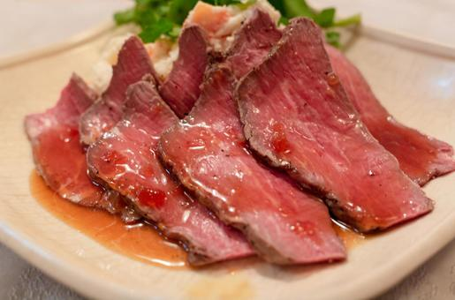

概要

ローストビーフは、特別な日やおもてなしにぴったりの料理です。外はカリッと、中はジューシーなローストビーフを自宅で簡単に作る方法をご紹介します。
レシピと作り方
材料
- 牛肉（ロースト用） - 1kg
- 塩 - 適量
- 黒こしょう - 適量
- オリーブオイル - 大さじ2
- にんにく - 2片
- ローズマリー - 適量
作り方
- 牛肉に塩と黒こしょうをすり込み、室温に戻します。
- フライパンにオリーブオイルを熱し、にんにくとローズマリーを加えて香りを出します。
- 牛肉をフライパンに入れ、全体に焼き色をつけます。
- 200℃に予熱したオーブンで、牛肉を20〜30分焼きます。
- 焼き上がったらアルミホイルで包み、10分ほど休ませます。
- 薄くスライスして、お好みのソースと一緒にお召し上がりください。
まとめ
ローストビーフは、シンプルな材料と手順で作ることができます。ぜひ、自宅で美味しいローストビーフを作ってみてください。